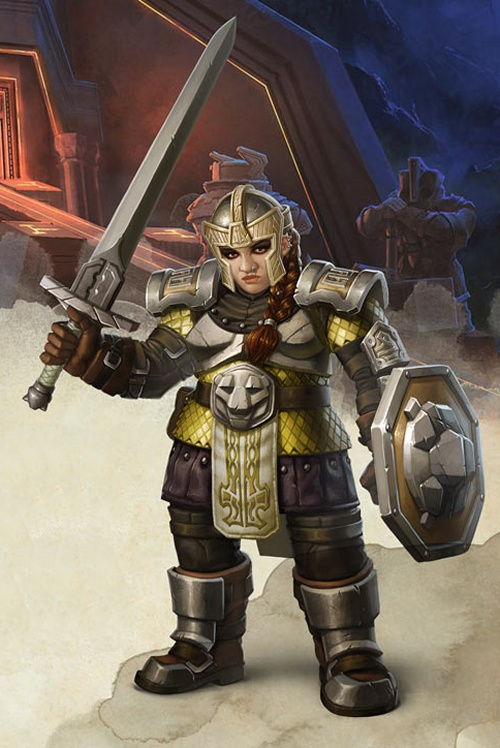

Guerrier nain niv 3

Jarhild Stoneforge
Guerrier (champion) 3 (900 PX)
Nain des montagnes (f), loyal bon
Soldat (infanterie)
[ CARACTÉRISTIQUES ]
For 16 (+3) Dex 10 (+0) Con 16 (+3)
Int 12 (+1) Sag 13 (+1) Cha 10 (+0)
[ MAÎTRISES ]
Bonus de maîtrise +2
Sauvegardes For +5, Con +5
Compétences Athlétisme +5, Histoire +3, Intimidation +2, Survie +3 (Perception passive 11)
Armes armes courantes, armes de guerre, hachette, hache d'armes, marteau léger, marteau de guerre
Armures toutes les armures, boucliers
Outils outils de forgeron, jeu d'échecs draconiques, véhicules (terrestre)
Langues commun, nain
[ COMBAT ]
pv 31 ; DV 3d10
Init +0 ; Vitesse 7,50 m
CA 17 (armure d'écailles 14, bouclier +2, Dex +0, Défense +1)
Épée longue. Corps à corps : +5 (1d8+3 tranchant ; polyvalente (1d10))
Hachette. Corps à corps : +5 (1d6+3 tranchant ; légère, lancer (portée 6 m/18 m))
[ CAPACITÉS & TRAITS ]
Second souffle (1d10+3 pv/repos)
Style de combat (défense)
Sursaut (+1 action/repos)
Critique amélioré (19-20)
Vision dans le noir (18 m)
Résistance naine (AV aux JdS vs poison)
Entraînement aux armes naines *
Maîtrise des outils *
Connaissance de la pierre (bonus de maîtrise x2 aux jets d'Int (Histoire) en relation avec la pierre)
Formation au port des armures naines *
Grade militaire
[ ÉQUIPEMENT ]
Épée longue, hachette (2), armure d'écailles, bouclier, jeu d'échecs draconiques, potion de soins, sac à dos, marteau, piton (10), torche (5), boite d'allume-feu, rations/1 jour (5), gourde, corde en chanvre de 15 m, vêtements communs, trophée, insigne de sergent, bourse
Coût de l'équipement 164.25 po ; Poids de l'équipement 51.5 kg
20 po
Poids des pièces 0.2 kg
[ PERSONNAGE ]
Taille M / 1,35 m / 70 kg ; Âge 55 ans (âge apparent 25)
Yeux noisettes ; Peau claire ; Cheveux châtains en tresses
Apparence La paume de la main droite de Jarhild a été marquée au fer rouge. Elle n'enlève que rarement ses gants face à des étrangers.
Trait Je peux faire baisser le regard d'un chien des enfers sans broncher.
Je connais plein d'histoires inspirantes et effrayantes de mon expérience militaire qui se révèlent pertinentes dans de nombreuses situations de combat.
Idéal Notre sort est de donner notre vie pour la défense des autres.
Lien Mon honneur est ma vie.
Défaut Je préfère manger mon armure qu'admettre que je me suis trompé.
Passé du personnage Jarhild est fille de forgeron, et plus précisément d'un des maîtres de forge les plus renommées de sa cité. Le talent de celui-ci était tel que la rumeur lui prêtait la capacité de plier n'importe quel métal, même ceux durs comme la pierre, à sa volonté. C'est pour cela qu'il était surnommé Stoneforge. Comme tout artisan, ce père rêvait d'avoir un fils qu'il formerait à son art pour lui succéder un jour à la tête de son affaire. Mais la nature est ainsi faite ; il n'eut qu'une fille unique, Jarhild. Or la guilde des fèvres de la cité, qui réglemente le métier de forgeron, était très claire : seuls les fils pouvaient prétendre à être formés et à exercer le métier de fèvre. Toutefois, et malgré cet interdit, Jarhild fut initiée par son père à la maîtrise des métaux. Mais c'était sans compter avec la jalousie d'un piètre maître de forge voisin, qui le dénonça un jour au doyen de la guilde. Si le jugement de la guilde fut clément pour son père, en regard à la qualité de son art, il le fut moins pour Jarhild : elle fut marquée au fer rouge à la paume de la main qui avait osé tenir le marteau de forge et bannie définitivement de la cité.
Jarhild mit alors ses connaissances en minerais métalliques et forgeage au service des humains. Elle versa dans le mercenariat, et loua ses services comme forgeronne à quelques nobliaux empêtrés dans de sempiternelles guerres territoriales. Sa corpulence et sa force peu commune la firent vite remarquer par l'un d'entre eux, qui la prit à sa solde et l'initia au maniement de l'épée. Elle gravit alors quelques échelons au sein de la garde du château seigneurial, jusqu'à devenir sergent d'armes, et servit son seigneur jusqu'à sa fin. Assiégé dans son château, et sans aucune perspective de secours de la part d'un suzerain trop distant, le seigneur de Jarhild préféra la reddition, ce qui sauva d'un massacre sa famille, ses serviteurs et ses soldats. Jarhild fut ainsi épargnée d'une mort certaine, mais son seigneur, prisonnier et incapable de payer rançon, finit décapité et sa dépouille livrée aux loups.
Jarhild est alors retournée au mercenariat, mais maintenant pour louer ses talents de guerrière.
Stat de WotC, histoire de rekk